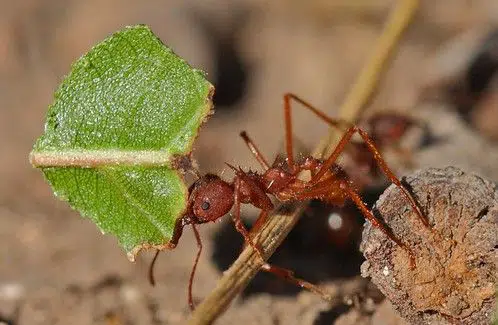
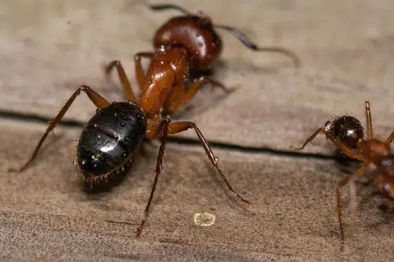
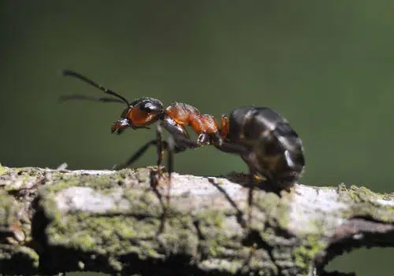

O Formigueiro
As formigas são, sem sombra de dúvidas, um dos seres vivos mais abundantes e importantes que habitam o planeta
terra. As enormes populações de formigas espalhadas por todo o mundo são essenciais para a manutenção da ordem
de ecossistemas inteiros.Para se ter uma ideia, estima-se que existam entre 10 e 100 quatrilhões de indivíduos
das mais diversas espécies de formiga no mundo. E, apesar de em certos momentos parecer que as formigas são
todas iguais, até hoje, foram catalogadas mais de 18 mil diferentes espécies desse inseto.
Neste artigo, apresentaremos algumas das mais importantes espécies de formiga, sendo, algumas delas,
desconhecidas pelo público.
tipos de formigas domesticas
formiga cortadeira

As formigas cortadeiras são insetos sociais que apresentam castas reprodutoras e não reprodutoras, vivendo
em colônias permanentes.
São insetos mastigadores e se desenvolvem por holometabolia (ovo-larva-pupa-adulto). Constituem-se em um dos
mais importantes grupos de insetos daninhos às culturas, pois atacam intensamente e constantemente as
plantas em qualquer estádio de desenvolvimento, cortando suas folhas, que são carregadas para o interior dos
ninhos localizados no interior do solo, onde cultivam fungos simbiontes. Isso torna difícil o seu controle e
exige combates intensos.
formiga carpinteira

Formigas carpinteiras possuem hábitos semelhantes aos da formiga-da-madeira, com uma pequena diferença. Ao
invés de consumirem dejetos de madeira como fazem as suas primas, as formigas carpinteiras apenas escavam
corpos de madeira, abrindo espaço para a construção de seus ninhos em troncos de árvores e madeiras de
telhado.
Nos Estados Unidos, a formiga carpinteira é tida como uma praga urbana e recebe mais atenção que os cupins
nesse sentido, visto a abundância de residências construídas totalmente em madeira naquele país. Essa
espécie possui tamanho e peso avantajados em relação a outras espécies de formiga e pode ser vista nas cores
preta, vermelha ou em uma mescla das duas.
formiga-da-madeira

As formigas-da-madeira não possuem esse nome em vão. Esse invertebrado engenhoso é conhecido por criar seus
ninhos nas proximidades ou no interior de corpos de madeira, como troncos velhos, vigas ou até caules de
árvores, tendo comportamento semelhante ao de cupins.
Os indivíduos adultos da espécie formiga-da-madeira usam a resina natural da madeira disponível para a
construção do seu ninho. Possuem um corpo robusto, se comparado com o de outras espécies de formiga e têm,
geralmente, uma cor marrom sólida.
tipos de formigas venenosas
formiga ceifeira
 Messor babarus é o nome científico dado à famosa formiga-ceifeira, que também é conhecida como
formiga-do-pão ou formiga-de-asas. Essa espécie é muito comum no Brasil, principalmente em regiões do
semiárido nordestino, onde são conhecidas por sua picada dolorosa. Essas formigas têm corpos pretos e
cabeças vermelhas, e são onívoras.
As formigas-ceifeiras são guerreiras naturais, preparadas para a defesa. Especialistas relatam que todos os
indivíduos de uma comunidade desses insetos são soldados, com exceção da rainha e dos filhotes. Por causa
desse instinto protetor, ninhos da Messor barbarus são amplamente identificáveis e temidos pelos habitantes
das regiões onde ocorrem.
Messor babarus é o nome científico dado à famosa formiga-ceifeira, que também é conhecida como
formiga-do-pão ou formiga-de-asas. Essa espécie é muito comum no Brasil, principalmente em regiões do
semiárido nordestino, onde são conhecidas por sua picada dolorosa. Essas formigas têm corpos pretos e
cabeças vermelhas, e são onívoras.
As formigas-ceifeiras são guerreiras naturais, preparadas para a defesa. Especialistas relatam que todos os
indivíduos de uma comunidade desses insetos são soldados, com exceção da rainha e dos filhotes. Por causa
desse instinto protetor, ninhos da Messor barbarus são amplamente identificáveis e temidos pelos habitantes
das regiões onde ocorrem.
formiga africana
 “Formiga africana” é um termo usado para designar um conjunto de espécies de formigas do gênero Epimyrma,
presentes no continente africano. As formigas desse grupo são extremamente agressivas e possuem um veneno
letal para as suas presas e, se aplicado em abundância em humanos, pode levar à morte.
As muitas espécies de formiga africana são versáteis e se adaptam a diversos ecossistemas, ocorrendo desde o
deserto do Saara até as florestas tropicais do interior africano. Têm, em sua maioria, uma coloração
amarelada e são onívoras, alimentando-se principalmente de pequenos animais, aos quais atacam em bando.
“Formiga africana” é um termo usado para designar um conjunto de espécies de formigas do gênero Epimyrma,
presentes no continente africano. As formigas desse grupo são extremamente agressivas e possuem um veneno
letal para as suas presas e, se aplicado em abundância em humanos, pode levar à morte.
As muitas espécies de formiga africana são versáteis e se adaptam a diversos ecossistemas, ocorrendo desde o
deserto do Saara até as florestas tropicais do interior africano. Têm, em sua maioria, uma coloração
amarelada e são onívoras, alimentando-se principalmente de pequenos animais, aos quais atacam em bando.
formiga lava-pés
 O termo “lava-pés” é usado para identificar um grupo de cerca de 20 espécies de formiga caracterizadas por
um comportamento agressivo. As espécies de formiga-lava-pés geralmente atacam seus alvos com muita
ferocidade e todas de uma vez só, aplicando doloridas picadas que contém veneno, a fim de imobilizar presas
geralmente muito maiores que elas mesmas.
Essas espécies de inseto geralmente ocorrem com mais frequência em lavouras e plantações de todo tipo, sendo
um problema para os trabalhadores que atuam na época da colheita. Geralmente, são coloridas em tons de
marrom e se alimentam de folhas e frutos.
Trabalho de Introdução à Computação.
O termo “lava-pés” é usado para identificar um grupo de cerca de 20 espécies de formiga caracterizadas por
um comportamento agressivo. As espécies de formiga-lava-pés geralmente atacam seus alvos com muita
ferocidade e todas de uma vez só, aplicando doloridas picadas que contém veneno, a fim de imobilizar presas
geralmente muito maiores que elas mesmas.
Essas espécies de inseto geralmente ocorrem com mais frequência em lavouras e plantações de todo tipo, sendo
um problema para os trabalhadores que atuam na época da colheita. Geralmente, são coloridas em tons de
marrom e se alimentam de folhas e frutos.
Trabalho de Introdução à Computação.
Josiane Ribeiro AQ3016595.